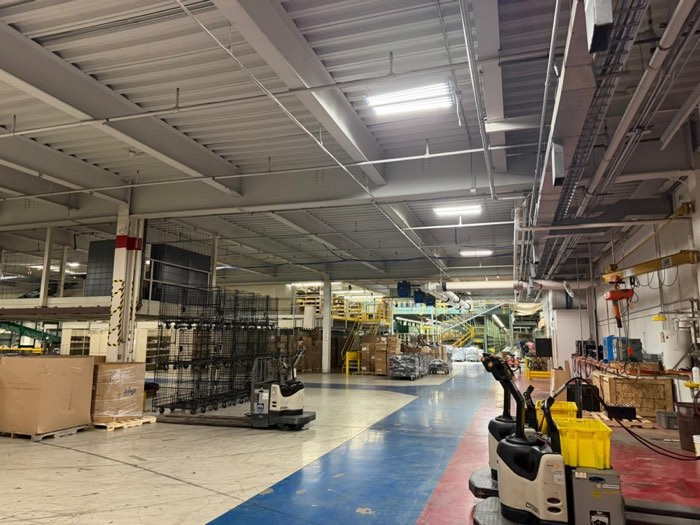

Customer Analytics Intern
Lands' End- Automated reporting of customer retention and demand metrics with AWS Lambda, Athena, SES, CloudFormation and Power BI, delivering scheduled insights to stakeholders and cutting manual workload 25× — from 2 hours to 4–5 seconds.
- Engineered an Infrastructure-as-Code foundation from scratch using Terraform and Git CI/CD, empowering the Customer Insights team to build and manage cloud infrastructure across 16 active IaaS resources.
- Rebuilt GitLab CI/CD pipelines with multithreaded parallel testing, cutting pipeline execution time by 34%.
